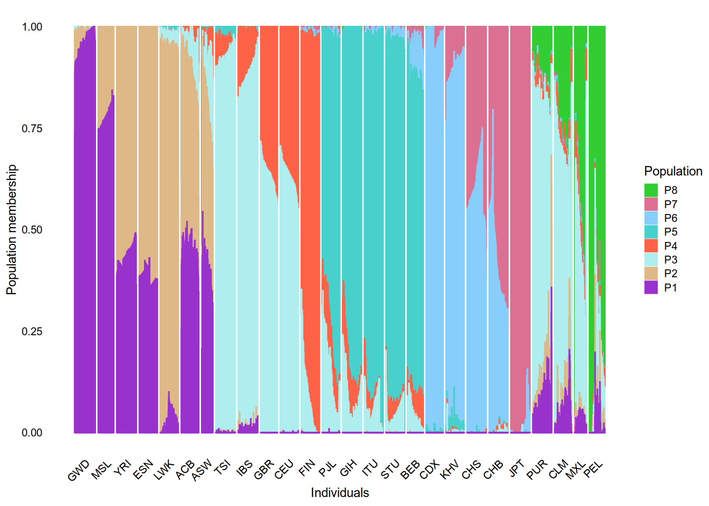
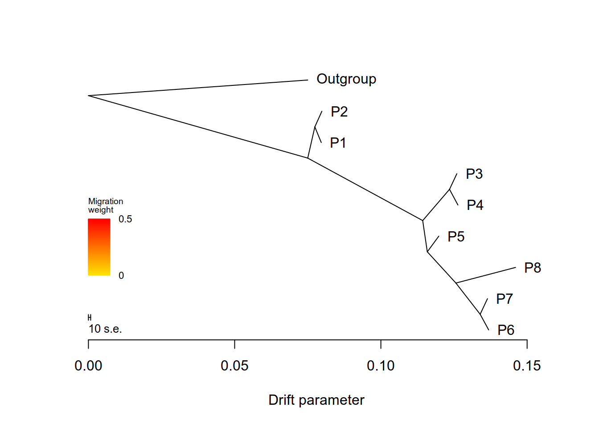
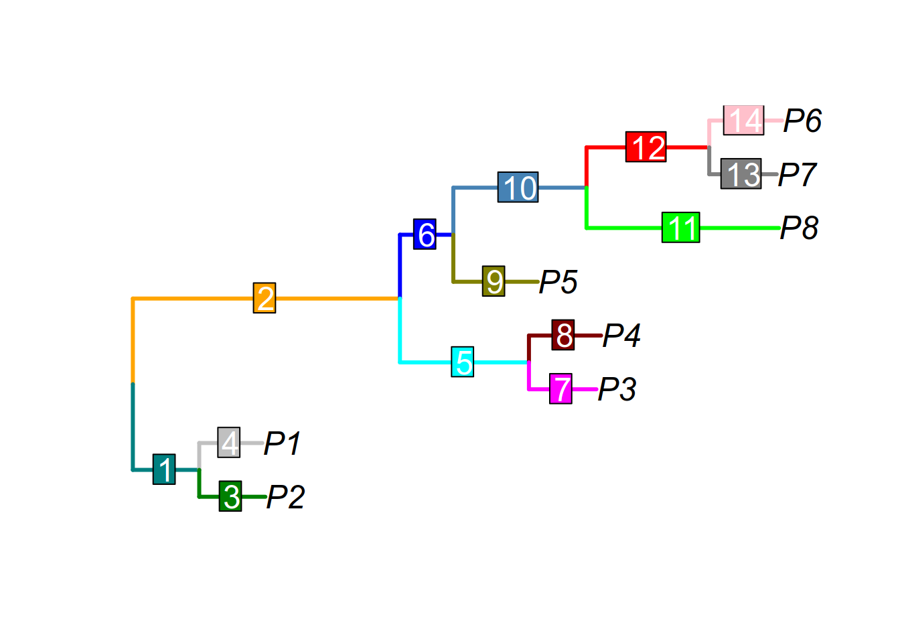
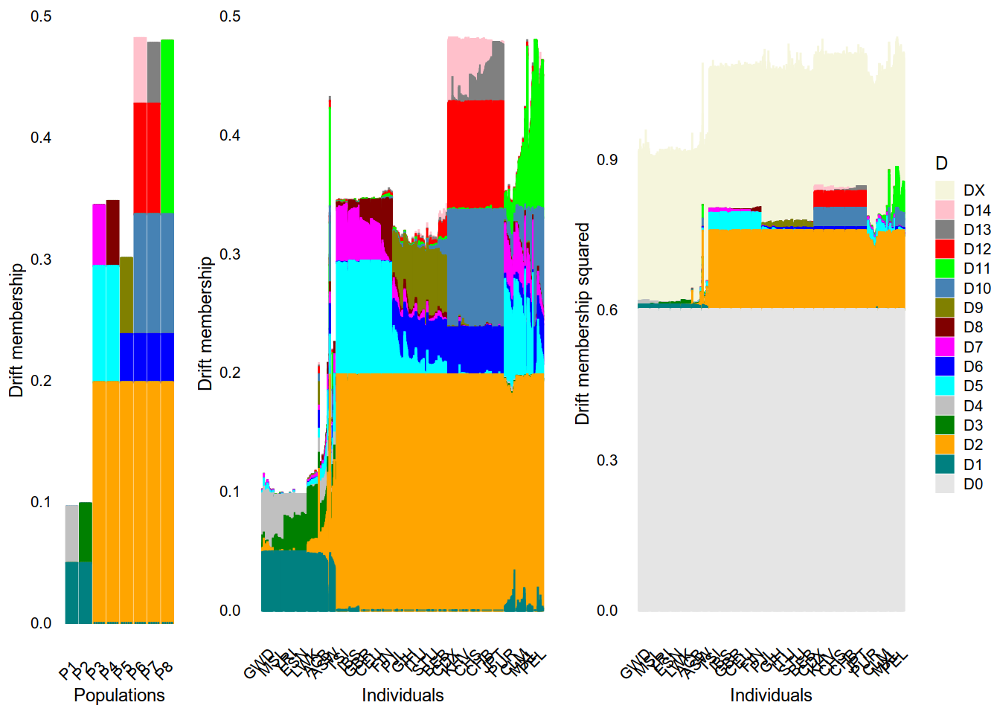

Last updated: 2025-10-26
Checks: 7 0
Knit directory: drift_paper/
This reproducible R Markdown analysis was created with workflowr (version 1.7.2). The Checks tab describes the reproducibility checks that were applied when the results were created. The Past versions tab lists the development history.
Great! Since the R Markdown file has been committed to the Git repository, you know the exact version of the code that produced these results.
Great job! The global environment was empty. Objects defined in the global environment can affect the analysis in your R Markdown file in unknown ways. For reproduciblity it’s best to always run the code in an empty environment.
The command set.seed(20251026) was run prior to running
the code in the R Markdown file. Setting a seed ensures that any results
that rely on randomness, e.g. subsampling or permutations, are
reproducible.
Great job! Recording the operating system, R version, and package versions is critical for reproducibility.
Nice! There were no cached chunks for this analysis, so you can be confident that you successfully produced the results during this run.
Great job! Using relative paths to the files within your workflowr project makes it easier to run your code on other machines.
Great! You are using Git for version control. Tracking code development and connecting the code version to the results is critical for reproducibility.
The results in this page were generated with repository version a5055a3. See the Past versions tab to see a history of the changes made to the R Markdown and HTML files.
Note that you need to be careful to ensure that all relevant files for
the analysis have been committed to Git prior to generating the results
(you can use wflow_publish or
wflow_git_commit). workflowr only checks the R Markdown
file, but you know if there are other scripts or data files that it
depends on. Below is the status of the Git repository when the results
were generated:
Untracked files:
Untracked: Rplots.pdf
Untracked: code/treemix-1.13/
Untracked: code/utils.R
Untracked: output/fig/
Untracked: output/treemix_results/
Note that any generated files, e.g. HTML, png, CSS, etc., are not included in this status report because it is ok for generated content to have uncommitted changes.
These are the previous versions of the repository in which changes were
made to the R Markdown (analysis/figure7.Rmd) and HTML
(docs/figure7.html) files. If you’ve configured a remote
Git repository (see ?wflow_git_remote), click on the
hyperlinks in the table below to view the files as they were in that
past version.
| File | Version | Author | Date | Message |
|---|---|---|---|---|
| html | 4a27444 | junmingguan | 2025-10-26 | Build site. |
| html | 37bd1a5 | junmingguan | 2025-10-26 | Build site. |
| Rmd | a0cbc3a | junmingguan | 2025-10-26 | wflow_git_commit("analysis/figure7.Rmd") |
library(here)here() starts at /project2/mstephens/junmingguan/drift_paperlibrary(tidyverse)── Attaching core tidyverse packages ──────────────────────── tidyverse 2.0.0 ──
✔ dplyr 1.1.4 ✔ readr 2.1.5
✔ forcats 1.0.0 ✔ stringr 1.5.1
✔ ggplot2 3.5.2 ✔ tibble 3.3.0
✔ lubridate 1.9.4 ✔ tidyr 1.3.1
✔ purrr 1.1.0 ── Conflicts ────────────────────────────────────────── tidyverse_conflicts() ──
✖ dplyr::filter() masks stats::filter()
✖ dplyr::lag() masks stats::lag()
ℹ Use the conflicted package (<http://conflicted.r-lib.org/>) to force all conflicts to become errorslibrary(genio)
library(ape)
Attaching package: 'ape'
The following object is masked from 'package:dplyr':
wherelibrary(gridExtra)
Attaching package: 'gridExtra'
The following object is masked from 'package:dplyr':
combinelibrary(pheatmap)
library(fastTopics)
source(here('code/utils.R'))
source(here('code/treemix-1.13/src/plotting_funcs.R'))/project2/mstephens/junmingguan/1000G/tgp_admixture_data_matched_to_AA.[bed/bim/fam]
/project2/mstephens/junmingguan/1000G/tgp_admixture_data_matched_to_AA.8.p
/project2/mstephens/junmingguan/1000G/dist/admixture_linux-1.3.0/admixture tgp_admixture_data_matched_to_AA.bed 8 -j6library(dplyr)
# extract meta data from kgp package
tgp_meta <- kgp::kgp3
tgp_meta <- tgp_meta %>%
select(sample = id, gender = sexf, pop = pop, super_pop = reg)
tgp_meta$pop <- factor(tgp_meta$pop, levels=c("GWD","MSL","YRI","ESN","LWK",
"ACB","ASW",
"TSI","IBS","GBR","CEU","FIN","PJL","GIH",
"ITU","STU","BEB",
"CDX","KHV","CHS","CHB","JPT",
"PUR","CLM","MXL","PEL"))
# reorder to match the ordering of samples in 1000 Genomes Project data
tgp_fam_data_id <- genio::read_fam('../1000G/tgp_admixture_data_matched_to_AA.fam')$idReading: ../1000G/tgp_admixture_data_matched_to_AA.famtgp_meta <- tgp_meta %>%
arrange(match(sample, tgp_fam_data_id))
pop <- tgp_meta$poptgp_data <- genio::read_plink('../1000G/tgp_admixture_data_matched_to_AA')Reading: ../1000G/tgp_admixture_data_matched_to_AA.bimReading: ../1000G/tgp_admixture_data_matched_to_AA.famReading: ../1000G/tgp_admixture_data_matched_to_AA.bedG <- tgp_data$Xloc <- '../1000G/'
filename <- 'tgp_admixture_data_matched_to_AA.'prep.PQ <- function(K){
# load ADMIXTURE fit
Q <- read_table(paste0(loc,filename,K,'.Q'),
col_names = FALSE, show_col_types = FALSE)
Q <- as.matrix(Q)
print(dim(Q))
P <- read_table(paste0(loc,filename,K,'.P'),
col_names = FALSE, show_col_types = FALSE)
P <- as.matrix(P)
print(dim(P))
# order factors
data.frame(pop = pop,
Q) %>%
pivot_longer(cols=2:(ncol(Q)+1)) %>%
group_by(pop, name) %>%
summarize(mean = mean(value)) %>%
group_by(name) %>%
arrange(name) %>%
filter(mean == max(mean)) %>%
ungroup() %>%
arrange(pop) -> df.cols
Q <- Q[, df.cols$name]
P <- P[, df.cols$name]
rownames(Q) <- pop
colnames(Q) <- paste0("P", 1:ncol(Q))
colnames(P) <- colnames(Q)
# change P coding
# 1. P <- 1-P to represent minor allele frequency (consistent with G)
#G0 <- data$X
#plot(P[1:100,1], rowMeans(G0[1:100, pop=='GWD'])/2)
#rm(G0)
P <- 1-P
# 2. flip if ancestral allele is different from original coding
# P[idx.flip,] <- 1-P[idx.flip,]
# 3. delete alleles without ancestral information
# P <- P[!idx.na,]
out.list <- list(P=P, Q=Q)
return(out.list)
}
################################################################################
# functions for preparing data
################################################################################
# G (S x N): genotype data
# P (S x K): population allele frequencies
# Q (N x K): individuals' population memberships
# X (S x K): minor allele counts
prep_GPQX <- function(G, P, Q){
popsize <- round(colSums(Q)) # effective population size
X <- round(P %*% diag(2*popsize))
colnames(X) <- colnames(P)
out.list <- list(G=G, P=P, Q=Q, X=X, popsize=popsize)
return(out.list)
}
treemix_output_to_L <- function(out_treemix){
out <- out_treemix
V <- data.frame(
id = out$d[,1],
label = ifelse(is.na(out$d[,2]), out$d[,3], out$d[,2])
)
V[V[,2]=='NOT_ROOT',2] <- ''
E <- data.frame(
from = out$e[,1],
to = out$e[,2],
driftsize = out$e[,3],
weight = out$e[,4]
)
L <- matrix(0, nrow=nrow(V), ncol = nrow(E))
rownames(L) <- V$label
v_idx_Outgroup <- which(V[,2]=='Outgroup')
# change (from=ROOT, to=Outgroup) --> (from=Outgroup, to=ROOT)
e_idx <- which(E$to==V$id[v_idx_Outgroup])
if ((V$id[which(V[,2]=='ROOT')]) != E[e_idx, 'from']){
warning('ROOT is not directly connected to Outgroup' )
return(NULL)
}
E[e_idx, 'to'] <- E[e_idx, 'from']
E[e_idx, 'from'] <- V$id[v_idx_Outgroup]
queue <- which(E$from == V$id[v_idx_Outgroup]) # queue is for edges
processed <- c()
while(length(queue)>0){
e <- queue[1]
queue <- queue[-1]
from_id <- E[e, 'from']
to_id <- E[e, 'to']
driftsize <- E[e, 'driftsize']
weight <- E[e, 'weight']
L[which(V$id==to_id),] <- L[which(V$id==to_id),] + L[which(V$id==from_id),] * weight
L[which(V$id==to_id), e] <- L[which(V$id==to_id), e] + driftsize * weight
processed <- c(processed, e)
if (all(which(E$to==to_id) %in% processed)){
queue <- c(queue, which(E$from==to_id))
}
}
L <- L[,processed] # reorder drifts, using the processed order
E <- E[processed,]
# combine the (Outrgoup --> Root) and (Root --> mu0) branches
L[,2] <- L[,1] + L[,2]
L <- L[,-1]
L <- L[rownames(L)!="" & rownames(L)!="Outgroup" & rownames(L)!="ROOT" ,]
L <- L[order(rownames(L)),]
L <- L[,apply(L, 2, max)>0]
colnames(L) <- paste0("D",0:(ncol(L)-1))
L <- sqrt(L) # convert drift sizes into drift memberships
return(L)
}
estimate_L_from_X_treemix <- function(X, popsize, include.outgroup=TRUE,
m1=TRUE, m2=TRUE){
# prepare temporary treemix input file
treemix_input <- c()
for (k in 1:ncol(X)){
ra <- 2*popsize[k] - X[,k]# reference (ancestral) allele count
ma <- X[,k] # minor (derived) allele count
treemix_input <- cbind(treemix_input,
c(colnames(X)[k], paste(ra, ',', ma, sep='')))
}
if(include.outgroup==TRUE){
ra <- rep(2, nrow(X))
ma <- rep(0, nrow(X))
treemix_input <- cbind(treemix_input,
c(paste0('Outgroup'), paste(ra, ',', ma, sep='')))
}
write.table(treemix_input, paste('output', 'treemix_results', 'temp_treemix_input', sep='/'),
row.names=FALSE, col.names=FALSE, quote=FALSE)
R.utils::gzip(paste('output', 'treemix_results', 'temp_treemix_input', sep='/'), overwrite=TRUE)
# run treemix for m=0,1,2
if(include.outgroup==TRUE){
rooting <- '-root Outgroup'
}else{
rooting <- ''
stop('This function is not yet implemented')
}
# paste0("cd '/Users/jkang/Library/CloudStorage/Box-Box/research/drift/output/treemix';",
paste0('module load gsl;',
'treemix -i output/treemix_results/temp_treemix_input.gz -seed 1 ', rooting, ' -o output/treemix_results/temp_treemix_m0') %>%
system(ignore.stdout=TRUE, wait=TRUE)
# use 'plotting_funcs.R' of treemix package to import results
out_m0 <- plot_tree('output/treemix_results/temp_treemix_m0')
L_m0 <- treemix_output_to_L(out_m0)
if(m1==TRUE){
# paste0("cd '/Users/jkang/Library/CloudStorage/Box-Box/research/drift/output/treemix';",
paste0('module load gsl;',
'treemix -i output/treemix_results/temp_treemix_input.gz -seed 1 ', rooting, ' -m 1 -o output/treemix_results/temp_treemix_m1') %>%
system(ignore.stdout=TRUE, wait=TRUE)
out_m1 <- plot_tree('output/treemix_results/temp_treemix_m1')
L_m1 <- treemix_output_to_L(out_m1)
}else{
L_m1 <- NULL
}
if(m2==TRUE){
# paste0("cd '/Users/jkang/Library/CloudStorage/Box-Box/research/drift/output/treemix';",
paste0('module load gsl;',
'treemix -i output/treemix_results/temp_treemix_input.gz -seed 1 ', rooting, ' -m 2 -o output/treemix_results/temp_treemix_m2') %>%
system(ignore.stdout=TRUE, wait=TRUE)
out_m2 <- plot_tree('output/treemix_results/temp_treemix_m2')
L_m2 <- treemix_output_to_L(out_m2)
}else{
L_m2 <- NULL
}
R.utils::gunzip(paste('output', 'treemix_results', 'temp_treemix_m0.treeout.gz', sep='/'),
overwrite=TRUE, remove=FALSE)
tree <- read.tree(paste('output', 'treemix_results', 'temp_treemix_m0.treeout', sep='/'))
tree_wo_Outgroup <- drop.tip(tree, 'Outgroup')
out.list <- list(L_m0 = L_m0, L_m1 = L_m1, L_m2 = L_m2,
tree = tree, tree_wo_Outgroup = tree_wo_Outgroup)
return(out.list)
}
compute_P_from_X <- function(X, popsize){
P <- matrix(0, nrow=nrow(X), ncol=ncol(X))
for (k in 1:ncol(X)){
P[,k] <- X[,k]/(2*popsize[k])
}
colnames(P) <- colnames(X)
return(P)
}# Admixture result with K=8 populations
out.PQ <- prep.PQ(8)[1] 2504 8
[1] 185116 8`summarise()` has grouped output by 'pop'. You can override using the `.groups`
argument.gpqx <- prep_GPQX(G = G, P = out.PQ$P, Q = out.PQ$Q)
loadings_order <- set_loadings_order((gpqx$Q)[,-1])19:49:13 UMAP embedding parameters a = 1.896 b = 0.800619:49:13 Read 2504 rows and found 7 numeric columns19:49:13 Using FNN for neighbor search, n_neighbors = 3019:49:13 Commencing smooth kNN distance calibration using 32 threads with target n_neighbors = 30
19:49:13 67 smooth knn distance failures
19:49:14 Found 5 connected components, falling back to 'spca' initialization with init_sdev = 1
19:49:14 Using 'irlba' for PCA
19:49:14 PCA: 1 components explained 28.2% variance
19:49:14 Scaling init to sdev = 1
19:49:14 Commencing optimization for 500 epochs, with 86150 positive edges
19:49:14 Using rng type: pcg
19:49:16 Optimization finisheddataname <- '1kgp'plot_Q(gpqx$Q, pop, loadings_order = loadings_order)
| Version | Author | Date |
|---|---|---|
| 37bd1a5 | junmingguan | 2025-10-26 |
# ggsave('output/Q.pdf', width=7, height=3)
ggsave(here('output', 'fig', 'fig7', paste0(dataname, '_Q.pdf')), width=7, height=3)out_treemix <- estimate_L_from_X_treemix(gpqx$X, gpqx$popsize,
m1=FALSE, m2=FALSE)Warning in plot_tree("output/treemix_results/temp_treemix_m0"): NAs introduced
by coercion
Warning in plot_tree("output/treemix_results/temp_treemix_m0"): NAs introduced
by coercion
Warning in plot_tree("output/treemix_results/temp_treemix_m0"): NAs introduced
by coercion
Warning in plot_tree("output/treemix_results/temp_treemix_m0"): NAs introduced
by coercion V1 V2 V3 V4 V5 V6 V7 V8 V9 V10
1 0 <NA> NOT_ROOT NOT_MIG NOT_TIP 16 4 1 135 1
2 1 P4 NOT_ROOT NOT_MIG TIP 2 NA NA NA NA
3 2 <NA> NOT_ROOT NOT_MIG NOT_TIP 52 3 1 1 1
4 3 P3 NOT_ROOT NOT_MIG TIP 2 NA NA NA NA
5 4 P7 NOT_ROOT NOT_MIG TIP 0 NA NA NA NA
6 15 P8 NOT_ROOT NOT_MIG TIP 16 NA NA NA NA
7 16 <NA> NOT_ROOT NOT_MIG NOT_TIP 32 15 1 0 2
8 31 Outgroup NOT_ROOT NOT_MIG TIP 137 NA NA NA NA
9 32 <NA> NOT_ROOT NOT_MIG NOT_TIP 52 51 1 16 3
10 51 P5 NOT_ROOT NOT_MIG TIP 32 NA NA NA NA
11 52 <NA> NOT_ROOT NOT_MIG NOT_TIP 76 2 2 32 4
12 75 P2 NOT_ROOT NOT_MIG TIP 104 NA NA NA NA
13 76 <NA> NOT_ROOT NOT_MIG NOT_TIP 137 104 2 52 6
14 103 P1 NOT_ROOT NOT_MIG TIP 104 NA NA NA NA
15 104 <NA> NOT_ROOT NOT_MIG NOT_TIP 76 75 1 103 1
16 135 P6 NOT_ROOT NOT_MIG TIP 0 NA NA NA NA
17 137 <NA> ROOT NOT_MIG NOT_TIP 137 31 1 76 8
V11
1 (P7:0.00250589,P6:0.0029146):0.00829827
2 P4:0.00286784
3 (P3:0.00250586,P4:0.00286784):0.00916757
4 P3:0.00250586
5 P7:0.00250589
6 P8:0.0204028
7 (P8:0.0204028,(P7:0.00250589,P6:0.0029146):0.00829827):0.00977689
8 Outgroup:0.0749888
9 (P5:0.0039247,(P8:0.0204028,(P7:0.00250589,P6:0.0029146):0.00829827):0.00977689):0.00157002
10 P5:0.0039247
11 ((P3:0.00250586,P4:0.00286784):0.00916757,(P5:0.0039247,(P8:0.0204028,(P7:0.00250589,P6:0.0029146):0.00829827):0.00977689):0.00157002):0.0393096
12 P2:0.00240754
13 ((P2:0.00240754,P1:0.00219067):0.00242809,((P3:0.00250586,P4:0.00286784):0.00916757,(P5:0.0039247,(P8:0.0204028,(P7:0.00250589,P6:0.0029146):0.00829827):0.00977689):0.00157002):0.0393096):0.0749888
14 P1:0.00219067
15 (P2:0.00240754,P1:0.00219067):0.00242809
16 P6:0.0029146
17 (Outgroup:0.0749888,((P2:0.00240754,P1:0.00219067):0.00242809,((P3:0.00250586,P4:0.00286784):0.00916757,(P5:0.0039247,(P8:0.0204028,(P7:0.00250589,P6:0.0029146):0.00829827):0.00977689):0.00157002):0.0393096):0.0749888);
x y ymin ymax
1 0.13394358 0.11111111 0.0000000 0.2222222
2 0.12633381 0.50000000 0.4444444 0.5555556
3 0.12346597 0.55555556 0.4444444 0.6666667
4 0.12597183 0.61111111 0.5555556 0.6666667
5 0.13644947 0.16666667 0.1111111 0.2222222
6 0.14604811 0.27777778 0.2222222 0.3333333
7 0.12564531 0.22222222 0.0000000 0.3333333
8 0.07498880 0.94444444 0.8888889 1.0000000
9 0.11586842 0.33333333 0.0000000 0.4444444
10 0.11979312 0.38888889 0.3333333 0.4444444
11 0.11429840 0.44444444 0.0000000 0.6666667
12 0.07982443 0.83333333 0.7777778 0.8888889
13 0.07498880 0.66666667 0.0000000 0.8888889
14 0.07960756 0.72222222 0.6666667 0.7777778
15 0.07741689 0.77777778 0.6666667 0.8888889
16 0.13685818 0.05555556 0.0000000 0.1111111
17 0.00000000 0.88888889 0.0000000 1.0000000Warning in max(e[e[, 5] == "MIG", 4]): no non-missing arguments to max;
returning -Inf
| Version | Author | Date |
|---|---|---|
| 37bd1a5 | junmingguan | 2025-10-26 |
[1] 0.12633381 0.12597183 0.13644947 0.14604811 0.07498880 0.11979312 0.07982443
[8] 0.07960756 0.13685818
[1] 0.003
[1] "mse 7.62992777777778e-05"L.ref <- out_treemix$L_m0[,-1] plot_T(out_treemix, edgelabels_adj = 0.5)
| Version | Author | Date |
|---|---|---|
| 37bd1a5 | junmingguan | 2025-10-26 |
pdf(file=here('output', 'fig', 'fig7', paste0(dataname, '_T.pdf')), # 'output/T.pdf',
width=8, height=5)
plot_T(out_treemix, edgelabels_adj = 0.5)
dev.off()png
2 figL.tree <- plot_L(L.ref, legend = FALSE)
figM.tree <- plot_M(M = gpqx$Q %*% L.ref,
pop=pop, loadings_order = loadings_order, legend = FALSE)
figM2.tree <- plot_M2(L = L.ref,
M = gpqx$Q %*% L.ref,
P = compute_P_from_X(gpqx$X, gpqx$popsize),
G = gpqx$G,
pop = pop,
loadings_order = loadings_order,
legend = TRUE)
fig.tree <- grid.arrange(figL.tree, figM.tree, figM2.tree, nrow=1, widths=c(1,2,2.3))
| Version | Author | Date |
|---|---|---|
| 37bd1a5 | junmingguan | 2025-10-26 |
fig.treeTableGrob (1 x 3) "arrange": 3 grobs
z cells name grob
1 1 (1-1,1-1) arrange gtable[layout]
2 2 (1-1,2-2) arrange gtable[layout]
3 3 (1-1,3-3) arrange gtable[layout]ggsave(here('output/fig', 'fig7', paste0(dataname, '_LMM2_tree.pdf')),
fig.tree,
width=12, height=3)
sessionInfo()R version 4.4.1 (2024-06-14)
Platform: x86_64-pc-linux-gnu
Running under: Red Hat Enterprise Linux 8.4 (Ootpa)
Matrix products: default
BLAS/LAPACK: /software/openblas-0.3.29-el8-x86_64/lib/libopenblas_skylakexp-r0.3.29.so; LAPACK version 3.12.0
locale:
[1] LC_CTYPE=en_US.UTF-8 LC_NUMERIC=C
[3] LC_TIME=en_US.UTF-8 LC_COLLATE=en_US.UTF-8
[5] LC_MONETARY=en_US.UTF-8 LC_MESSAGES=en_US.UTF-8
[7] LC_PAPER=en_US.UTF-8 LC_NAME=C
[9] LC_ADDRESS=C LC_TELEPHONE=C
[11] LC_MEASUREMENT=en_US.UTF-8 LC_IDENTIFICATION=C
time zone: America/Chicago
tzcode source: system (glibc)
attached base packages:
[1] stats graphics grDevices utils datasets methods base
other attached packages:
[1] RColorBrewer_1.1-3 fastTopics_0.6-192 pheatmap_1.0.13 gridExtra_2.3
[5] ape_5.8-1 genio_1.1.2 lubridate_1.9.4 forcats_1.0.0
[9] stringr_1.5.1 dplyr_1.1.4 purrr_1.1.0 readr_2.1.5
[13] tidyr_1.3.1 tibble_3.3.0 ggplot2_3.5.2 tidyverse_2.0.0
[17] here_1.0.1 workflowr_1.7.2
loaded via a namespace (and not attached):
[1] pbapply_1.7-4 rlang_1.1.6 magrittr_2.0.3
[4] git2r_0.36.2 compiler_4.4.1 getPass_0.2-4
[7] systemfonts_1.2.3 callr_3.7.6 vctrs_0.6.5
[10] quadprog_1.5-8 pkgconfig_2.0.3 crayon_1.5.3
[13] fastmap_1.2.0 labeling_0.4.3 promises_1.3.3
[16] rmarkdown_2.30 tzdb_0.5.0 ps_1.9.1
[19] ragg_1.4.0 xfun_0.53 cachem_1.1.0
[22] jsonlite_2.0.0 progress_1.2.3 later_1.4.4
[25] irlba_2.3.5.1 parallel_4.4.1 prettyunits_1.2.0
[28] R6_2.6.1 bslib_0.9.0 stringi_1.8.7
[31] SQUAREM_2021.1 jquerylib_0.1.4 Rcpp_1.1.0
[34] knitr_1.50 R.utils_2.13.0 FNN_1.1.4.1
[37] httpuv_1.6.16 Matrix_1.7-3 timechange_0.3.0
[40] tidyselect_1.2.1 rstudioapi_0.17.1 yaml_2.3.10
[43] processx_3.8.6 lattice_0.22-7 withr_3.0.2
[46] evaluate_1.0.5 Rtsne_0.17 RcppParallel_5.1.10
[49] pillar_1.11.0 whisker_0.4.1 plotly_4.11.0
[52] generics_0.1.4 rprojroot_2.1.1 invgamma_1.2
[55] truncnorm_1.0-9 hms_1.1.3 scales_1.4.0
[58] ashr_2.2-63 kgp_1.1.1 gtools_3.9.5
[61] RhpcBLASctl_0.23-42 glue_1.8.0 lazyeval_0.2.2
[64] tools_4.4.1 data.table_1.17.8 fs_1.6.6
[67] cowplot_1.2.0 grid_4.4.1 nlme_3.1-168
[70] cli_3.6.5 textshaping_1.0.1 mixsqp_0.3-54
[73] viridisLite_0.4.2 uwot_0.2.3 gtable_0.3.6
[76] R.methodsS3_1.8.2 sass_0.4.10 digest_0.6.37
[79] ggrepel_0.9.6 htmlwidgets_1.6.4 farver_2.1.2
[82] htmltools_0.5.8.1 R.oo_1.27.1 lifecycle_1.0.4
[85] httr_1.4.7